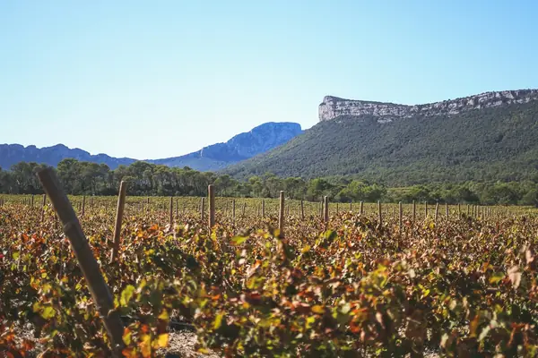

Home › Wine regions › Languedoc-Roussillon
Languedoc-Roussillon wine region

Photo: Morgane Le Breton on Unsplash
Value-driven blends.
The benchmark for many wine styles, organized by appellation (AOC).
Climate and soil
Warm Mediterranean climate with garrigue scrub and varied soils. France's largest wine area by vineyard.
Key areas and appellations
Corbières, Minervois, Pic Saint-Loup, Faugères, Banyuls
Good to know
Good value reds and a growing number of fine wines. Banyuls is a fortified sweet wine.
The grapes of Languedoc-Roussillon
- Carignan (red): blackberry, cherry, herbs. Best known in Languedoc, Sardinia.
- Garnacha / Grenache (red): strawberry, cherry, spice. Best known in Spain, Rhône, Sardinia.
- Syrah / Shiraz (red): blackberry, pepper, smoke. Best known in Rhône, Barossa, Washington.
Notable producers in Languedoc-Roussillon
- Mas de Daumas Gassac
- Domaine Gauby
- Domaine de la Grange des Pères
- Château de Lascaux
- Domaine Peyre Rose
Languedoc-Roussillon wines to try
Gérard Bertrand Côte des Roses Rosé
Languedoc-Roussillon · Languedoc · Grenache Rosé, Cinsault, Syrah / Shiraz
Pale and fresh: redcurrant, citrus peel and a floral, gently saline finish.
Food: Grilled fish, salads, tapenade
Mas de Daumas Gassac Rouge
Languedoc-Roussillon · Pays de l'Hérault · Cabernet Sauvignon
Languedoc's pioneering estate: blackcurrant, wild herbs, cedar and firm, age-worthy tannins.
Food: Roast lamb, duck confit, hard cheese
Mas de Daumas Gassac Réserve de Gassac Blanc
Languedoc-Roussillon · Pays de l'Hérault · Sauvignon Blanc, Chardonnay, Viognier
Fresh, aromatic Languedoc white blend.
Food: Salads, fish
Domaine de l'Hortus Grande Cuvée Rouge
Languedoc-Roussillon · Pic Saint-Loup · Syrah, Mourvèdre, Grenache
Garrigue-scented red of blackberry, olive and violet, ripe but kept lively by the cool nights under Pic Saint-Loup.
Food: Lamb shoulder with herbs, cassoulet
Domaine Félines Jourdan Picpoul de Pinet
Languedoc-Roussillon · Picpoul de Pinet AOC · Picpoul
Bright, saline Picpoul from vines by the Thau lagoon: lemon zest, green apple and a briny snap that keeps it lively.
Food: Oysters, moules marinière
Mas Amiel Maury Vintage
Languedoc-Roussillon · Maury AOC · Garnacha / Grenache
Young fortified Grenache bottled early for freshness: black cherry, kirsch and cocoa with supple, sweet tannins.
Food: Dark chocolate tart, blue cheese
Domaine Lafage Miraflors Rosé
Languedoc-Roussillon · IGP Côtes Catalanes · Grenache Gris, Mourvèdre
Pale Roussillon rosé from coastal vines: white peach, redcurrant and a light herbal, mineral finish.
Food: Grilled prawns, salade niçoise
Food to try with Languedoc-Roussillon wines
- Steak: Firm tannins in Cabernet and Tempranillo cut through the fat and char of a seared steak, while peppery Shiraz echoes the sauce.
- Shepherd's pie: Peppery, juicy Grenache and Shiraz match savoury lamb mince and gravy without overwhelming a homely dish.
- Toad in the hole: Soft, juicy Merlot and Grenache have enough fruit for pork sausages and onion gravy, with gentle tannins that suit the batter.
- Venison stew: Gamey venison loves Syrah's dark fruit, pepper and smoky notes, and Grenache-led Rhône blends add warmth for a winter stew.
- Ratatouille: A Provençal dish deserves Provençal wines: dry rosé or a supple Grenache red matches the herbs, tomato and olive oil.
- Lamb tagine with apricots: Warm spices, apricots and lamb suit ripe, spicy Grenache and Syrah blends, whose soft fruit embraces the sweetness.
More wine regions in France
See Languedoc-Roussillon on the wine map
The Wine Reference newsletter
New wines, stories and career guides, one email a week at most.
Over 18s only. Unsubscribe any time with one click. Your email is stored securely by Kit and never shared.
Support The Wine Reference
This guide is free, with no paywall. If it helped you choose a bottle, you can buy me a glass and keep it growing.
🍷 Buy me a glass